Префектура Миэ · Сима · отель
Shima Kanko Hotel: курорт над заливом Аго, где принимали саммит G7
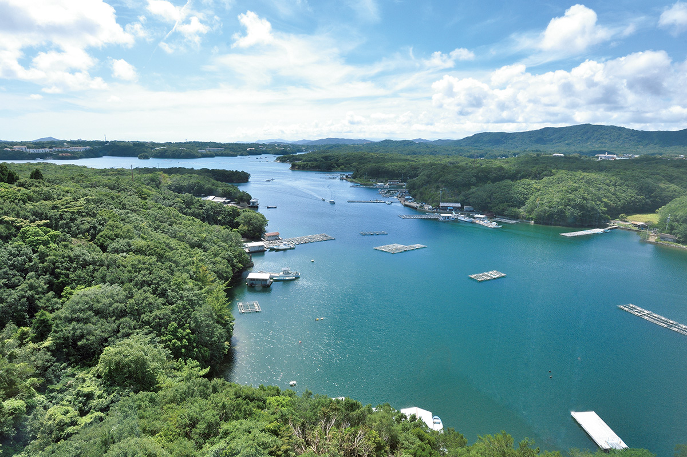
Shima Kanko Hotel открылся в 1951 году, а в 2016 году здесь проходил саммит G7. Этот отель держится не на одной истории: его любят за тишину залива Аго и за кухню, которая встречает гостя мягко, без попыток поразить.
Место
Море, похожее на горное озеро
В Японии один за другим открываются новые отели, и многие из них не оправдывают ожиданий. Shima Kanko Hotel из другой породы. Он стоит в Симе, на юго-востоке префектуры Миэ. В древности этот край называли микэцукуни: отсюда поставляли еду к столу императорского двора и в святилище Исэ. Отель открылся в 1951 году по проекту архитектора Того Мурано (1891–1984), одного из главных японских архитекторов XX века. Его давняя слава здесь не единственный довод: отель до сих пор выглядит свежо.
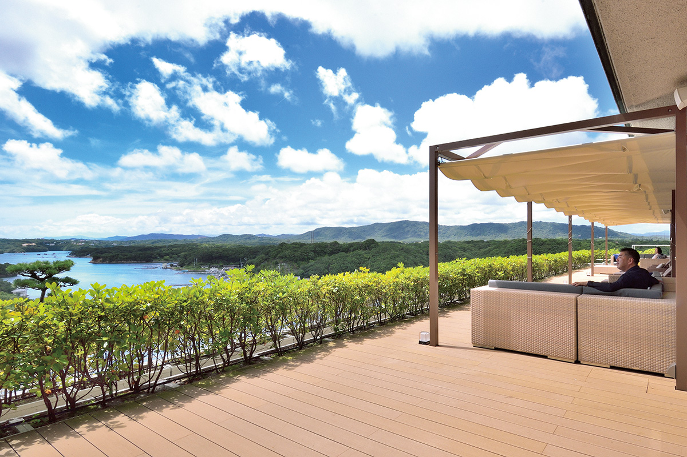
Это морской курорт, но не пляжный. Море, которое видно из окон, больше похоже на озеро в горах: тихая вода, а вокруг густая зелень, плотным кольцом обнимающая залив Аго. Горизонта нет, шума прибоя тоже. Вдали тянется цепочка невысоких гор, всё вокруг заполняют оттенки зелёного, а между ними скромно лежит спокойная гладь воды.
Отель стоит на острове Касикодзима, и сам остров со всех сторон окружён заливом. Отчасти поэтому здесь так легко успокоиться. Вид из номеров мягкий, на него можно смотреть часами. Писатель, который рассказал нам об этом отеле, впервые приехал сюда больше тридцати лет назад. С тех пор многое изменилось, но кое-что осталось прежним.
Корпуса
Три здания на одной территории
Сегодня Shima Kanko Hotel состоит из двух отелей, The Classic и The Bay Suites, к которым добавляется третье здание, The Club. Все три стоят на большой территории с садом, и где бы вы ни жили, по всем корпусам и саду можно гулять свободно.
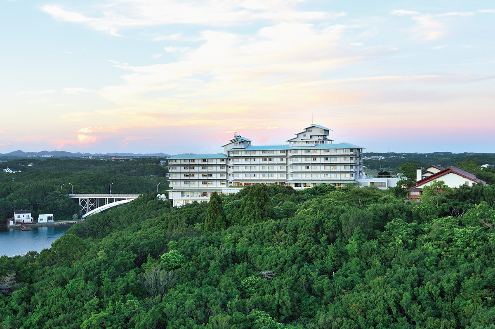
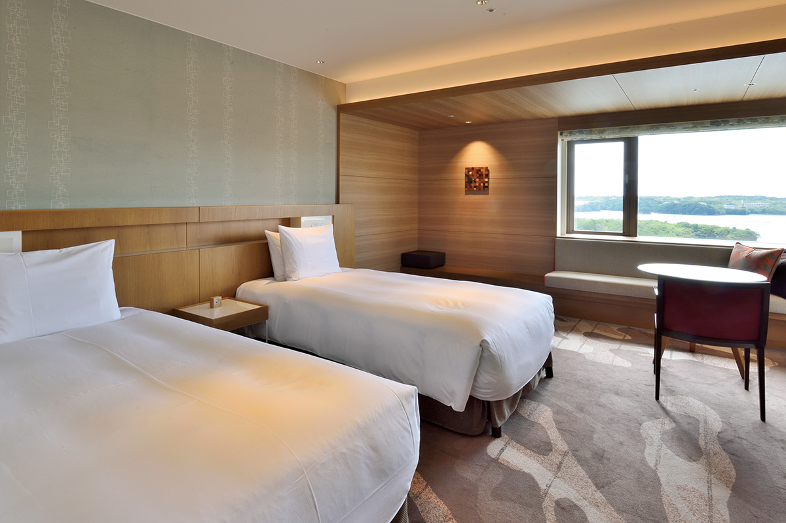
Ближе всего к тому, что писатель помнит по первому приезду, остались The Club и ресторан La Mer The Classic. Здесь чувствуется статус, но нет холодности, и гостя окружает та же тёплая атмосфера, что и десятилетия назад. Главное, чего не хватает многим современным отелям, здесь есть: умение принять человека целиком. Если описать этот отель одним словом, то это материнская забота.
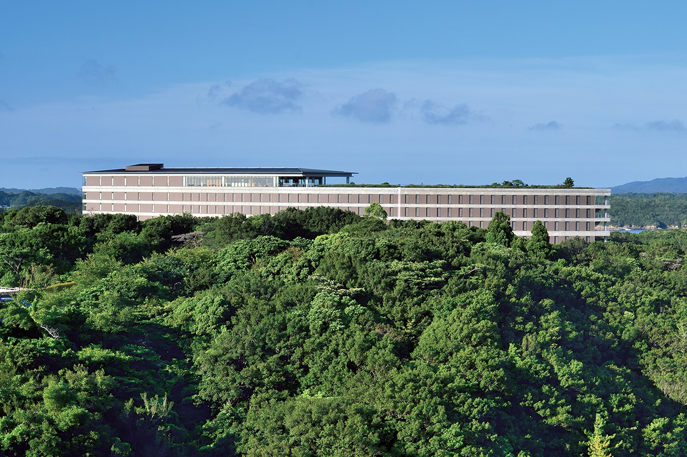
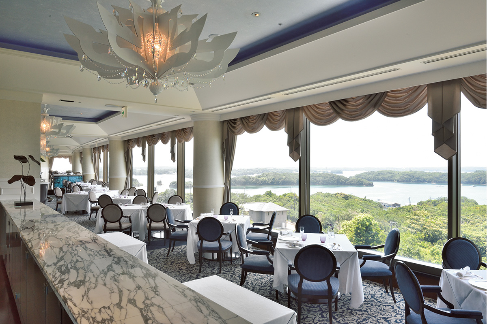
В обоих отелях есть свои лаунжи для гостей. Перед ужином здесь пьют аперитив, и эта неспешная пауза тоже часть отдыха.
Кухня
Французская кухня из даров моря
Сильнее всего забота отеля ощущается за ужином во французском ресторане. Здесь нет блюд, которые бросают вызов и утомляют, нет кухни, которая хвастается мастерством повара. Многие современные повара будто направляют на гостя острое лезвие, а здешняя кухня устроена наоборот. Она обволакивает, как тёплая вода.
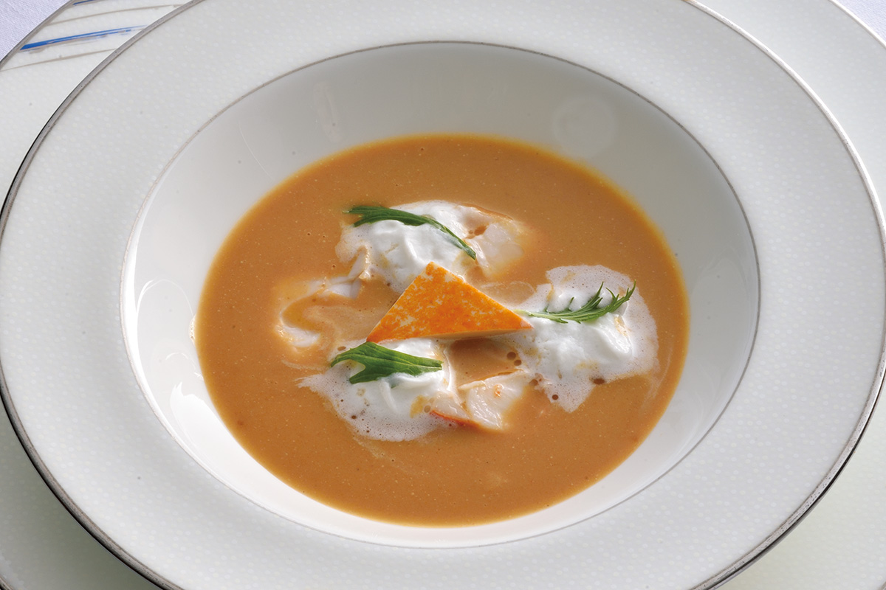
Фирменный стиль отеля называют «французская кухня из даров моря». Её основы заложил Тадаюки Такахаси, пятый шеф-повар отеля: он соединил классическую французскую технику с уловом Исэ-Симы. Нынешний шеф-повар Хироэ Хигути, которая готовила для участников саммита G7 2016 года, бережно следует его принципам и развивает их, превращая классику в высокую гастрономию, которую можно довести до конца только здесь. Среди старых фирменных блюд отеля есть и сливочный суп из морского ушка на традиционном бульоне.
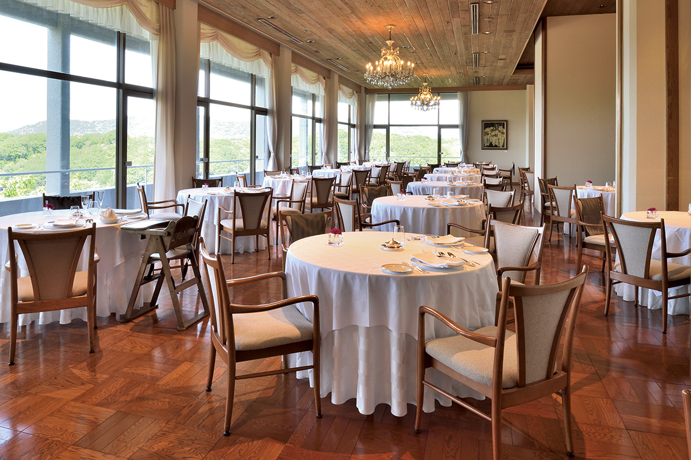
Кухня щедро берёт местные продукты и доводит их до большой тонкости. Она не имеет ничего общего с модой на гурманство и показывает, как мало значат громкие слова. Еду не обсуждают, ею наслаждаются. По словам писателя, за ужином здесь к нему вернулось то самое чувство, с которым он впервые ел в этом отеле, только теперь поверх него легло много новых нитей.
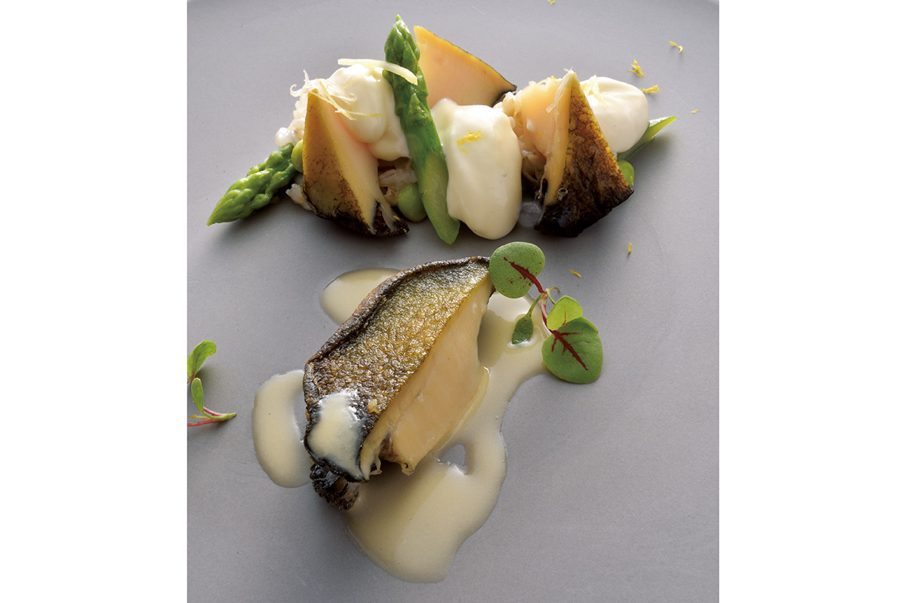
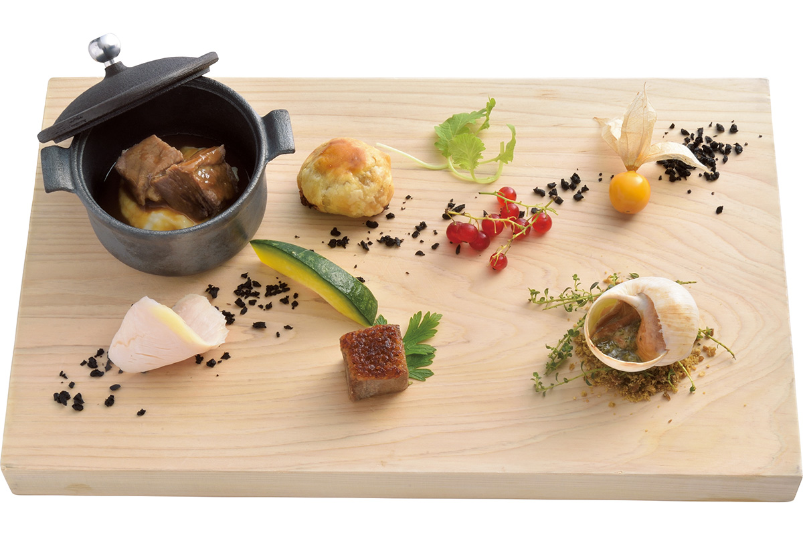
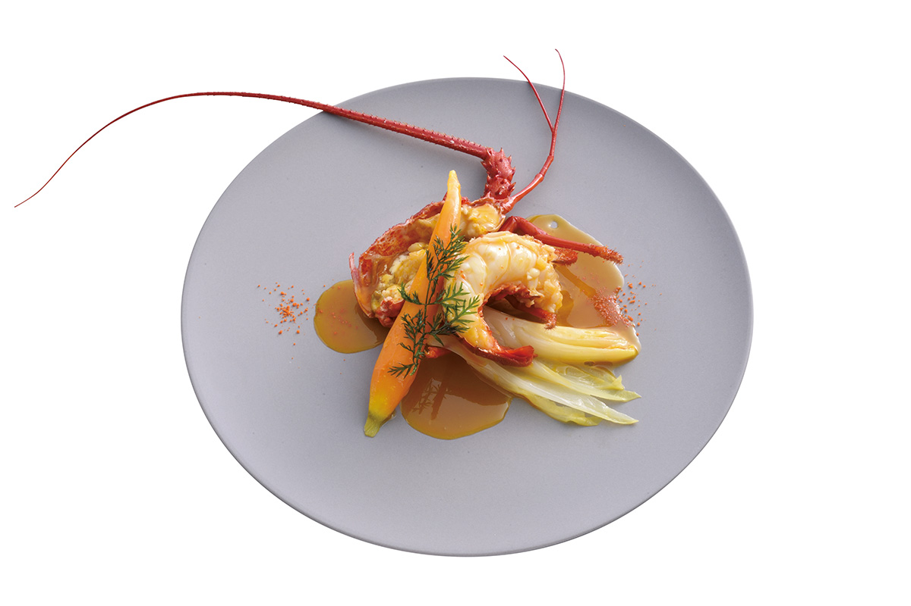
После ужина можно перейти в кафе и винный бар Lien. Писатель закончил вечер там с бокалом солодового виски и понял, чем на самом деле должен быть курортный отель.
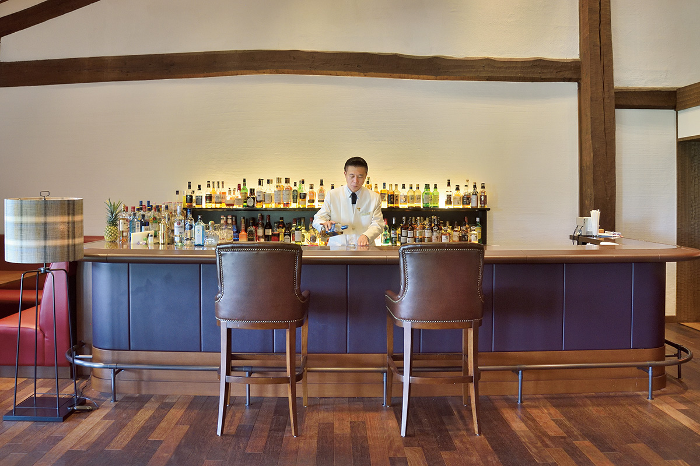
Пожить в Shima Kanko Hotel значит довериться мастерству и вниманию, которые здесь передают из поколения в поколение, расслабиться и спокойно уснуть. Звёзды и рейтинги тут ни при чём.
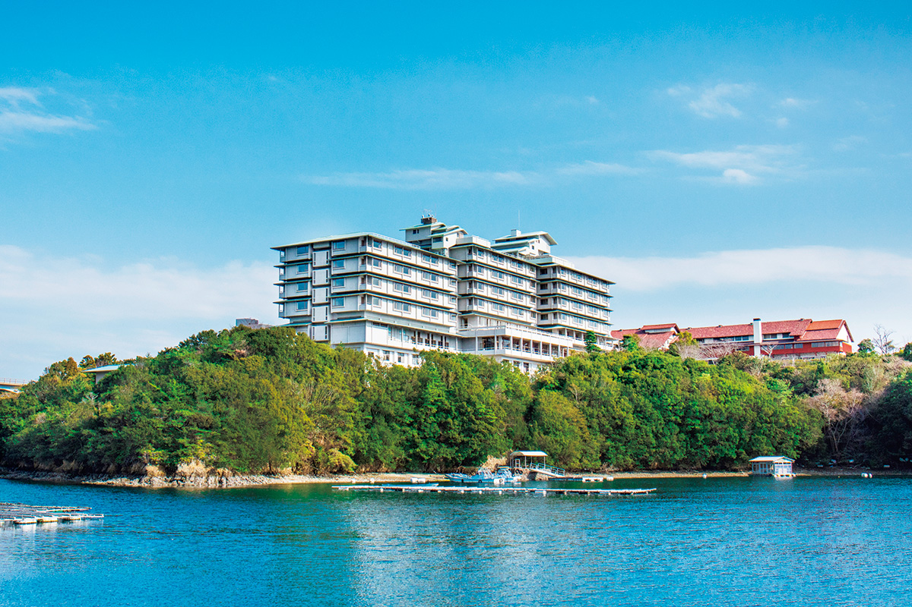
В 2020 году номер с ужином и завтраком стоил от 31 800 иен на человека с налогом и сервисным сбором, в 2025 году от 50 700 иен.
Shima Kanko Hotel
- Адрес
- префектура Миэ, Сима, Аго-тё, Синмэй, 731
- Телефон
- +81 599-43-1211
- Номера
- 114
- Цены / Вход
- с ужином и завтраком от 50 700 иен на человека, налог и сервисный сбор включены
- Заезд / выезд
- 14:00 / 11:00
- Как добраться
- от станции Касикодзима линии Кинтэцу бесплатный автобус отеля, около 2 минут; на машине от развязки Исэ-Ниси скоростной дороги Исэ около 40 минут
Фото: Ко Мияди.